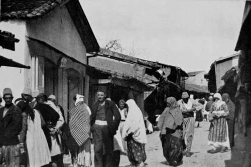
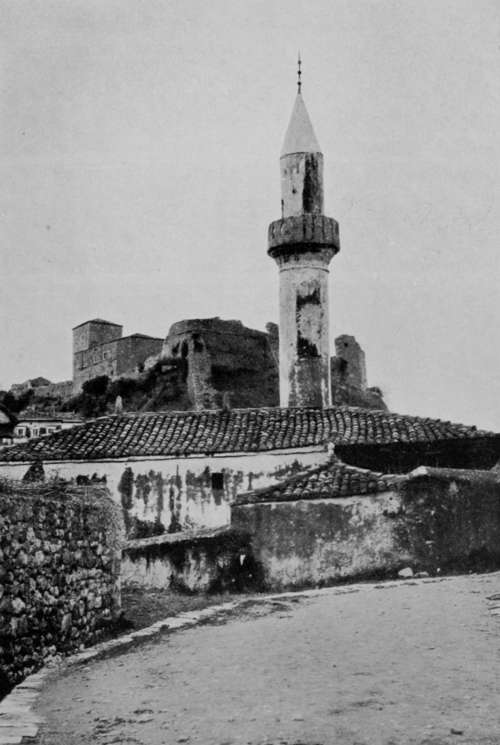
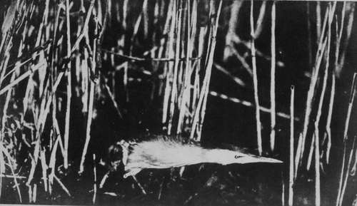

The Quest Of The Pelican : Montenegro. Part 3
Description
This section is from the book "Bird-Hunting Through Wild Europe", by R. B. Lodge. Also available from Amazon: Bird-Hunting Through Wild Europe.
The Quest Of The Pelican : Montenegro. Part 3
Farther on a group of women squat cross-legged on the ground, with various goods for sale placed in front of them. They are Mohammedans, and are carefully muffled up to the eyes in flowing white draperies. At my approach, intent on photographing the picturesque and curious group, they bend forwards until their heads almost touch the ground, so that I shall see as little as possible ; women standing outside the shops looking for bargains take refuge in the dark interiors as soon as they see me; while the Turkish ladies, on seeing a stranger approach, sidle along with their faces turned towards the wall and away from the unbeliever. This is perhaps wise on their part, for anything more hideous and ghastly-not to say devilish-than their appearance it is impossible to imagine. I think it was Mark Twain who said that he could never understand why Mohammedan women should cover their faces so carefully until one day he saw one unveiled by chance, then he understood. If it was not Mark Twain who made this remark it ought to have been, for it is quite characteristic of him. However that may be, Turkish children are very often remarkably pretty, with oval faces, and large, lustrous eyes heavily fringed with long eyelashes. But their appearance is generally spoilt by the fact that their hair is stained a fiery red with lime, and their fingers stained yellow with henna.
Street Scene, Dulcigno
The Montenegrin women do not cover their faces. They wear the same small, red, gold and black forage cap as the men, a plain blue skirt, and a long white or blue sleeveless jacket. The younger women often have their black hair hanging down in two tails, which in the older ones are generally wound round the forehead like a coronet, and a very effective fashion it is, and one which suits well their strong and often noble-looking faces. They are a fine people, both men and women.
The trade seems to be chiefly in the hands of Turks, and there are at least three or four mosques in the place.1 One of them is just opposite my window, and I can hear the muezzin call the faithful to prayers as I lie in bed in the morning. The people who flock into the town on bazaar days are chiefly Albanians, who appear to occupy and cultivate much of the land around. It speaks volumes for the Montenegrin rule that these people, naturally so antagonistic, can mingle together as harmoniously as they do on Montenegrin soil. It is also curious that the Albanians appear to thrive, while poverty drives the Montenegrins to emigrate to the United States at the rate, I was told, of 500 a week, there to work in the mines of California.
I have seen many parties of these poor people embarking, with their small bundles of possessions, bravely enough, with songs and fusillades of revolver shots. I have also been behind the scenes, as it were, and have accompanied them in their march over the hills, through the olive-woods, which they were seeing for the last time. I have watched these stalwart men singing with the tears running down their faces, and sobbing like children when the moment of parting arrived. On these occasions half the population of the town turns out to give them a good send-off, and the consumption of cartridges for their revolver salutes is considerable.
1 Dulcigno was originally a Turkish port, and was only captured by Montenegro about thirty years ago.
Turkish Mosque And Ruined Castle, Dulcigno
The first search for a nesting-place of Pelicans having been frustrated, another locality was visited, of which I had received information in Serajevo. This was a lake not far from the town, but difficult of access, from the extraordinary strong current, against which it was almost impossible to force the rude, dug-out canoe we had borrowed for the occasion. At last, after great exertion, we succeeded in navigating the narrow but impetuous stream, and found ourselves in a small lake with a thick growth of tall reeds all round, leaving an open space in the middle. There were immense numbers of Coots and White-eyed Ducks. Purple Herons were carrying sticks and evidently beginning their nesting arrangements in the reeds, but all our search failed to find any sign of Pelicans or their nests. Marsh Harriers were numerous, and observing one sitting on what appeared from a distance to be a nest, we rowed towards it. The supposed nest, however, was only a pile of reeds ; but to make sure, I got out of the boat and waded into the reed-bed to make a more thorough search. Not many yards from where the Harrier had been first seen a curious-looking object was observed on the surface of the water. As I approached nearer this looked like a dead bird; still nearer it was seen to be a Little Bittern, but alive, and crouching motionless in a very unbirdlike attitude. I remembered having read that this bird had sometimes allowed itself to be caught in the hand, and so I approached through the deep water, nearly up to my waist, very slowly and cautiously until within arm's length. Then, by a quick movement, I succeeded in grasping it by the neck. In truth I was almost as much astonished as the bird at such a curious capture, perhaps more so, for it showed neither surprise nor fear, but sat on my knee, after returning to the boat, quite contentedly, without making the least attempt to escape.
A few days after this second unsuccessful search I received a letter from an English lady I had met on the steamer before arriving at Dulcigno, to say that she had mentioned my quest after Pelicans to the Austrian Consul at Durazzo in Albania. He had told her that Pelicans were numerous there, close to the town-in fact, that they were visible from his windows with the aid of a glass, and that if I liked to come he would be very glad to put me up and assist me to the best of his ability.
This offer, so unexpected, coming from a complete stranger, was as welcome as it was unlooked for. In fact, it relieved me of so much doubt as to what I should do next that I wrote at once to say that I should come as soon as I possibly could. I packed up all my belongings, lost no time in boarding the next steamer bound for the Albanian ports, and started off to see my unknown friend.
Little Bittern
Continue to:
- prev: The Quest Of The Pelican : Montenegro. Part 2
- Table of Contents
- next: V. The Quest Of The Pelican : Albania